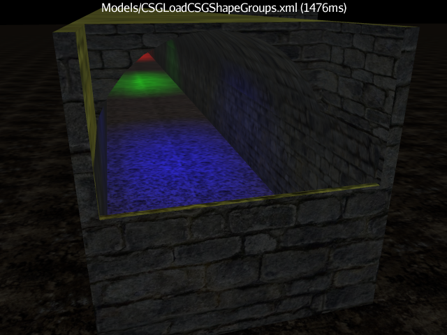

I began my efforts with CSG to fulfill a need for programmatic construction tools that I can leverage in other experiments. To that end, the CSG support has grown somewhat beyond the minimal needs of adding/subtracting/intersecting shapes. The following are just some of the features implemented to meet my other personal requirements.
Lights
I had not anticipated any use for Lights being locally attached to the primitive shapes that are being blended together. No provision was made for them in the original code, and such lights were blissfully ignored. But I started working more with interior spaces that result from subtracting a smaller object from the middle of a larger one. I know that globally acting lights affect all surfaces equally, with no particular knowledge of an interior space. To get the proper illumination of an enclosed/interior space, shadow processing must be turned on.
The core jMonkey engine supports shadow processing via Renderers/Filters that are tied to specific kind of lights. But my experiments yielded less-than-inspiring results. Some of the effects were quite realistic, but there were many instances of just plain oddness. And the frame rate dropped precipitously. I am willing to attribute many issues to my lack of understanding, but until I can access better examples, I need a different approach.
Since local lights apply only to those elements within the given Spatial, I realized that I can produce some level of interior-only lighting if I could create an appropriate Node as part of the blending process. Support for multiple Materials already knows how to associate an end-product surface back to its original primitive shape. This procedure was readily expanded to keep track of local lights as well as materials. The end result includes a Node that contains the local lights, and all the surface Mesh elements that are illuminated by such lights.
For example, if I subtract a cylinder from a box, I can define lights on the cylinder itself. These lights only appear on the final interior surfaces elements, no where else. While certainly not a comprehensive solution as true shadows would be, this allows me to produce some nice effects. This also works well with groups of subshapes. To create an arch-shaped corridor, I group together a half-height Box for the bottom, and a Cylinder for the top. I can then subtract this group from an exterior Box. Adding lights to the group results in some nice interior illumination. Adding lights locally to the exterior box means I can light the outside without bleed-through into the interior.

The default jme3 behavior is that all lights are positioned in world space, even if locally defined. The goal of CSG is to build up a complex shape from simpler primitives. When lights are added, one would expect that transforming the final shape would retain the proper illumination. But if lights are positioned globally, translating the final shape means the lights are no longer shining where one would expect. jme3 addresses this issue via the LightControl, which can reposition a Light as its associated Spatial is transformed. By default, CSG will create and assign an appropriate Control to all local lights encountered during a blend. It uses a custom CSGLightControl that better supports the underlying CSG structure. But you can disable this feature or provide any other Control to use for light management.
Animation
Support for animation based on dynamic CSG processing is not one of my design goals. I always anticipated severe performance hits due to matching all the surfaces in one shape against all the surfaces in some other set of shapes. I expected to use CSG as a loading operation, absorbing the performance cost as part of initial setup. If animation was desired, I assumed that some N number of frames would be pre-built.
But it is still a fun test to see just what CSG can do dynamically. A rather simple test case is to have two shapes with a common center rotating in opposite directions. Then display the intersection of the two. With simple boxes (12 triangles per box), you get pretty good response. Change one of those boxes to a somewhat smooth cylinder, and the frame rate takes a hit. You can interrogate the blended shape after regeneration to get a count of nanoseconds required to build the shape.
The setup is straight forward. Create two shapes and blend them into a third. In the
update loop, apply rotation to the two primitives, and then regenerate the blended shape.
The CSG code will rebuild the blend from scratch on every regenerate call.
download movie(which is rather choppy due
to the recording being active, but which is rather smooth in real life)
2D Surfaces
The main thrust of CSG is the blending of solids. But I ran into the situation of wanting to place a solid on my 2D floor without the floor bleeding through. There is certainly no need to build the floor as a solid, and I was hoping to leverage the jme3 Surface and Terrain. The IOB processor does a fine job of detecting overlaps and selecting the proper triangles for the final blended shape. Subtracting the solid from the floor gives me a nice hole where the solid should go. Intersecting the solid and the floor shows me exactly where the overlap is. And a union gives me a funky shape that I am not sure is very useful (but which looks correct).
I have no idea if the BSP processor will function properly, and I have no plans to experiment or work on it.